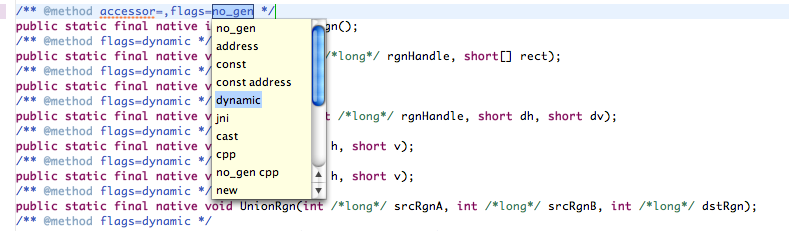

Generating the SWT JNI Code
All of the C code used by SWT is generated by the JNIGeneratorApp application included in the SWT Tools bundle and available on the Update Sites. This page describes how to use this tool when fixing bugs or adding features to SWT.
Adding native methods
- Add the function prototype in
OS.java, copying the style and structure of the other functions in that file. Note that for Mac/Cocoa, portions ofOS.javaare also generated. - Install the latest SWT Tools from the Update Site.
- Restart Eclipse.
- Use code assist templates like jni* (i.e. jnifield and jnimethod) to add javadoc tags that
describe flags and casts for any primitive types. See metadata for more
documentation.

- Save the file. This should generate the needed changes in the appropriate C files.
- Compile the new C code and copy the new libraries to the appropriate fragment by running the
Build-SWT-native-binaries-for-running-platformlaunch configuration.
Adding structs
Often, methods return values or require parameters as a C struct. To add a new structure, simply add a new class in the same package as the OS.java file which matches the definition of the C structure. This will be picked up and correctly handled by JNIGeneratorApp.
If a struct is input-only or output-only, this information can be used by JNIGeneratorApp to generate more efficient C code. Use the flags attribute of the native function to indicate this in the metadata.
More Hints
- Many functions on Mac OS X return structs which use unions. For an example of how to add the markup for a union, see the ControlFontStyleRec structure and its metadata.